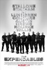

Self-Awareness in Cinema
http://www.slashfilm.com/2010/09/02/the-rise-of-self-awareness-in-cinema-is-film-doomed-to-become-a-mockery-of-itself/
List contains: 47 items, 78.3 hours.
List contains: 47 items, 78.3 hours.
Stephen Klancher
...has seen 25
...has seen 46.5 hours
...has not seen 31.8 hours

Timeline - Covers
Most Recent:
Be Kind Rewind
First Unseen:
Piranha 3D (# 3)
...has seen 25
...has seen 46.5 hours
...has not seen 31.8 hours
Timeline - Covers
Most Recent:
Be Kind Rewind
First Unseen:
Piranha 3D (# 3)
1.

The Expendables (2010)
Stephen Klancher: August 15, 2010 
Let Li was the most fun character to me. Especially the whole "I'm smaller" conversation. I knew Arnold was going to just be a cameo (and the President line was great), but I was hoping to see more Bruce Willis.
2.

Scott Pilgrim vs. The World (2010)
Stephen Klancher: August 16, 2010
Ridiculously awesome. This is the style that comics and anime should take for live action film adaptations. The video game flavor to things was just pure joy. Whenever I end up really liking something I realize that sound has a lot to do with it. This movie used video game sounds and music throughout. There is absolutely a Pavlovian response as the movie uses many sounds from games that are tied to rewards... There was a fight where every hit had the sound of Sonic collecting rings. The humor was very fun, but the style of every part of this just tapped into the joy center of my brain.

4.

The Other Guys (2010)
Stephen Klancher: August 6, 2010
Freakin hilarious. I expected good things from Will Ferrell, but Mark Wahlberg, Michael Keaton, and pretty much all the side characters were excellent in this too. So damn funny.
6.
Machete (2010)
Stephen Klancher: September 11, 2010
Watching Danny Trejo is ridiculously fun. Also Michelle Rodriguez > Jessica Alba
9.

Super 8 (2011) Releases on 2011-06-10
Stephen Klancher: June 10, 2011
I was not interested in this based on the preview, but Nick and Grant really wanted to see it. It was a surprisingly great film. It was funny throughout and I loved the Goonies vibe from the cast. Very fun.
10.

Inception (2010) Releases on 2010-07-16
Stephen Klancher: July 17, 2010
Dreams within dreams... there was never a chance I wouldn't like this movie. It was incredibly fun.
14.
Inglourious Basterds (2009)
Stephen Klancher: August 23, 2009
Brad Pitt was fun but Col. Landa (Christoph Waltz) was great. Some of the violence was pretty gruesome even considering it was Terantino. It made me remember having read someone comparing the Nazis watching Nation's Pride cheering the violence against the Allied soldiers to the audience cheering the violence on screen against the Nazis. Anyway, the inferno was pretty impressive and the face projected on the smoke was creepy cool.
20.
Hot Fuzz (2007)
21.
Team America: World Police (2004) Releases on 2004-10-15
22.

Kick-Ass (2010) Releases on 2010-04-16
Stephen Klancher: June 27, 2010
Totally fun movie! So many of the scenes in this movie were like the answer to "what's the coolest thing that could happen in this situation?" Good music though much of it as well.
24.
MacGruber (2010)

29.

Observe and Report (2009)
Stephen Klancher: April 11, 2009
The standard funny. Last scene was pretty hilarious, Dennis was funny, Coffee Girl was cute.
31.

Pineapple Express (2008)
Stephen Klancher: January 19, 2009
Definitely some funny moments, but a much better stoner movie is Grandma's Boy.
35.
Crank: High Voltage (2009) Releases on 1969-12-31
Stephen Klancher: April 18, 2009
Whoa... This had the pacing of the first one but then got way more outrageous. Interesting music throughout and always surprising weirdness. A lot of people will hate this for a lot of reasons, but I think it has a sense of style that it executes very well. Don't see if you can't handle violence, nudity, racism, a story that ranges from implausible to impossible to silly, etc... But if you can, see it for the style and surprise: I had a lot of fun.
45.
Slither (2006)
Stephen Klancher: September 6, 2010
Well that was weird and fun. I really enjoyed the creature visuals. Also Nathan Fillon. And Elizabeth Banks is quite the pretty lady.
47.
Kiss Kiss Bang Bang (2005)